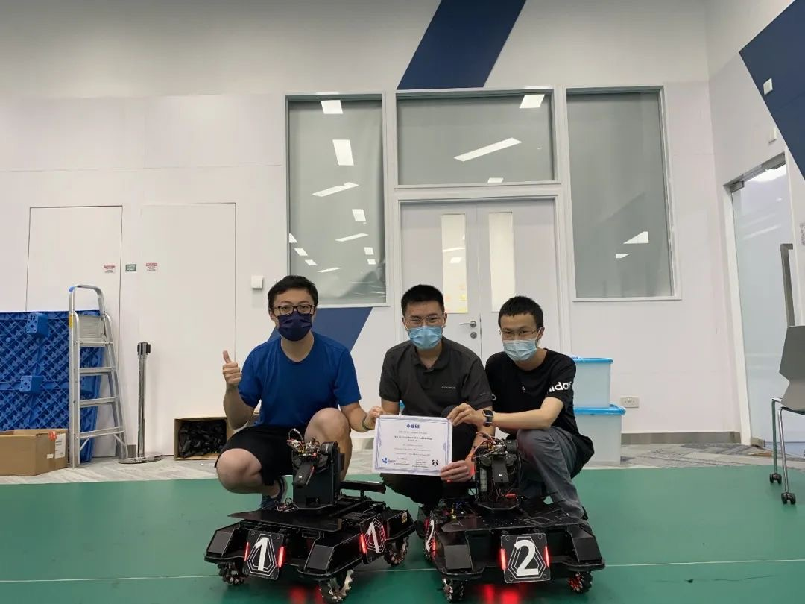
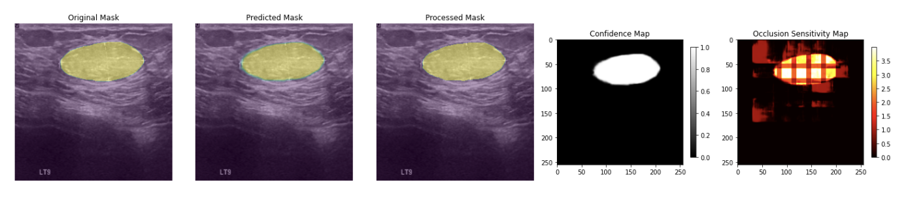
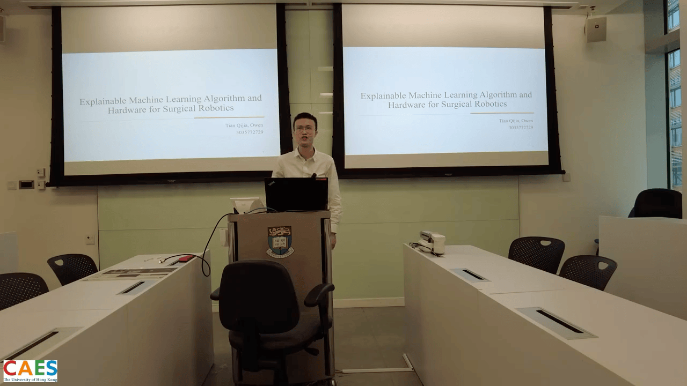

EDUCATION
The University of Hong Kong
2024.09-2025.11
- Msc in Computer Science, HKU, with distinction, GPA: 3.58/4.3;
- Courses: Natural Language Processing (A); Introduction to Unmanned Systems (A-); Big Data Management (A-); Introduction of Cyber Securities (A).
The University of Hong Kong
2020.09-2024.06
- BENG in Computer Engineering, HKU, with First Class Honor, GPA: 3.77/4.3, Rank: 1/52;
- Courses: Senior Design Project (A-); Introduction to Deep Learning for Computer Vision (A+); Algorithm Design (A); Digital System Design (A+); Computer Architecture (A); Control System I (A+); Probabilistic System Analysis (A+); Signal and Linear Systems (A-).
EXPERIENCE
Research Assistant, The University of Hong Kong, Hong Kong
2025.11-Present
- Designed a reproducible Medical OCR Benchmark for clinical intake forms, focusing on robust extraction from noisy handwritten and scanned fields;
- Established a two-track OCR protocol: V1 (full-text transcription) and V2 (handwriting + Y/N key fields); benchmarked 10+ vision-language models on 49 anonymized cases, with best results at CER 3.67% / WER 6.63% and Y/N accuracy up to 94.94%;
- Currently advancing a triage + decision + audit pipeline with evidence retrieval and cross-checking modules, so each recommendation is grounded in source records and model outputs;
- Implementing verifiable and traceable workflow logging (input snapshots, intermediate reasoning artifacts, and decision provenance) to support clinical review, audit, and model governance.
Research Assistant, Pengcheng Laboratory, Shenzhen
2025.04-2025.10
- Contributed to deployment of a Python-based TSN verification platform to evaluate Delay Alignment Scheduling Algorithm (DASA) on industrial ring topologies;
- Processed and visualized large-scale simulation results, validating 36% reduction in maximum delay and 81.9% reduction in delay difference versus baseline FRER methods;
- Supported literature review on TSN reliability mechanisms and assisted manuscript formatting and camera-ready preparation.
Fintech Intern, China Construction Bank Corporation, Ningbo
2023.07-2023.08
- Tested systems with Jmeter/Python and supported issue fixing and platform optimization.
Software & Hardware Development Intern, Zhongda Leader Intelligent Transmission, Ningbo
2023.06-2023.07
- Supported motor design/testing and quality assurance to meet industry standards.
PROJECT EXPERIENCE
Developer, VulkanECS Game Engine - MSc Group Project, Hong Kong
2025.02-2025.07
- Architected and implemented high-performance Entity Component System (ECS) with archetype-based entity management, supporting 10,000+ entities at 100+ FPS;
- Designed efficient ECS query and iteration mechanisms optimized for cache performance and scalability;
- Developed comprehensive sample game demonstration (3D vampire survivor style) showcasing engine capabilities.
Developer, FridayDoc - Modular AI Research Assistant Framework, Group Project, Hong Kong
2024.11-2024.12
- Developed a modular AI research assistant framework enhancing OS-Copilot with script-based architecture;
- Implemented hierarchical documentation system combining high-level tool menus and detailed guides;
- Created platform integrations for Hugging Face, GitHub, and X (Twitter) for automated data retrieval.
Developer, Explainable ML Algorithm & Hardware for Surgical Robot, SDP, Hong Kong
2023.09-2024.04
- Enhanced model interpretability using Grad-CAM, SHAP, LIME, and Occlusion Sensitivity Map techniques for breast tumor segmentation;
- Implemented Attention UNet for accurate segmentation under computational constraints;
- Developed surgical robot hardware prototype with motor control and real-time processing.
PUBLICATIONS & PATENTS
| Yan Liu, Zhuyun Qi, Xingbo Feng, Shuangping Zhan, Jiashuo Lin, Chenxi Ling, Ruide Cao, Qijia Tian, Weichao Li, Yi Wang, ReCQF: Enhancing CQF Redundancy with Delay Alignment Scheduling in TSN, IEEE/IFIP Network Operations and Management Symposium 2026 (Accepted). |
| Organic Solar Thin Film Cell Simulation Based on Transfer Matrix (Unpublished). |
HONORS & AWARDS
| Faculty of Engineering Peer Mentorship Programme Certificate 2023-2024 | 2024.07 |
| Faculty of Engineering Peer Mentorship Programme Certificate 2022-2023 | 2023.07 |
| Dean's Honors List 2021-2022 | 2023.02 |
| The 2022 RobotMaster Sim2Real Challenge First Prize | 2022.08 |
| Dean's Honors List 2020-2021 | 2022.01 |
SKILLS & LANGUAGES
- Languages: Mandarin (Native), English (Work language), Cantonese (Basic)
- IT skills: Python, C, SQL, MATLAB, PyTorch, OpenCV, Vulkan SDK, LLM Prompt Engineering, Deep Learning, Verilog/VHDL
APPENDIX

The 2022 RobotMaster Sim2Real Challenge First Prize Team

The 2022 RobotMaster Sim2Real Challenge First Prize Team

Part of the results of the Final Year Project

Part of the results of the Final Year Project

Final Year Project Presentation

Final Year Project Presentation
Senior Design Project Link
Certificates Copy
Medical AI Focus - English
Medical AI Focus - Chinese
Last updated on 2026-05-11
Press 'h' to hide the navigation bar and appendix and 'j' to show it.
Press '0' to toggle header style.
Press 'i' to toggle edit mode. In edit mode, press Ctrl/Cmd+S to save changes to index.html.
Press 'w' to export the resume as a Word document.